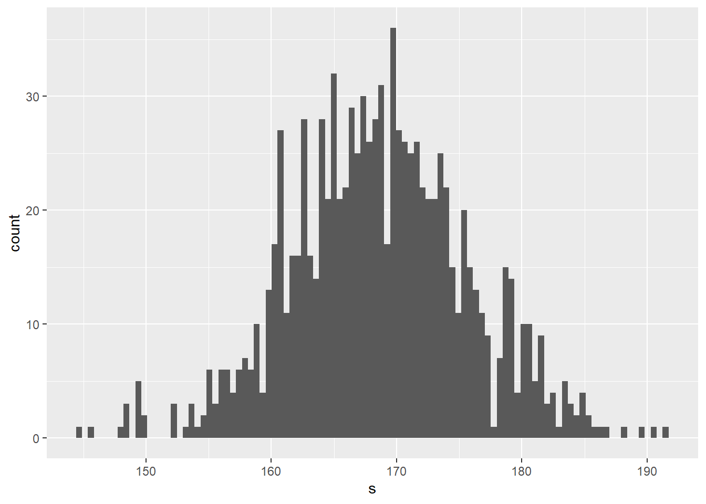
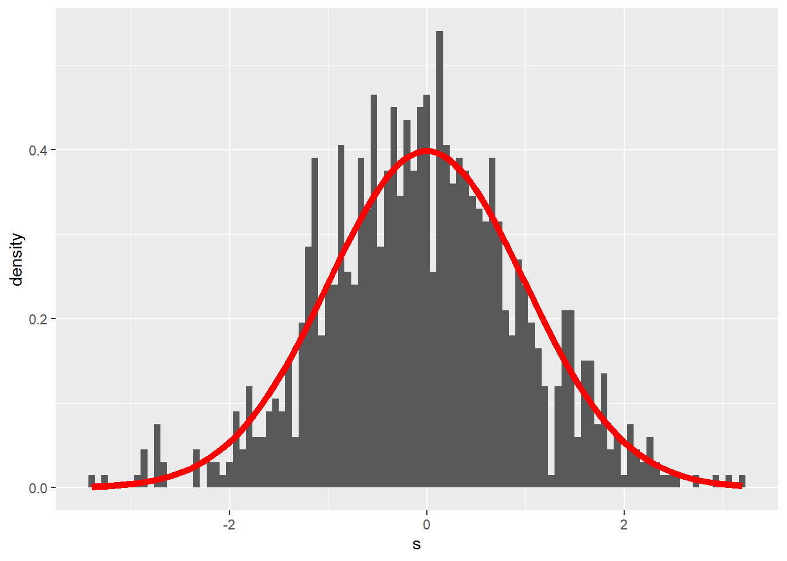
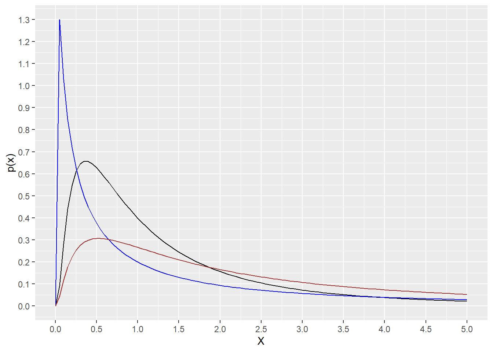

Chapter 15 Nonparametric Statistical Tests
Non-parametric statistical tests are versatile with respect to the dependent variables they tolerate.
They are typically applied to datasets involving ordered data. One nonparametric test is used to assess simple proportions. They can also be for data on measured, equal interval scales, for which the normality and equal variance assumptions of parametric statistical testing are not satisfied or cannot be assumed.
Nonparametric statistics are parameter-less. They don’t compare means, or medians (though people frequently treat nonparametrics as tests of medians), or standard deviations, or variance. They do compare distributions of data, but only after the data has been transformed into a standardized measure of ranks–either signs, sign ranks or rank sums.
The tests, essentially, evaluate whether the distribution of ranks in an experimental outcome differs from a null distribution of ranks, given a sample size. That can seem pretty abstract. But it’s actually a simple and elegant way to think about these tests.
With the exception of the Sign Test, which has a probability as an effect size, strictly speaking there really isn’t an effect size that describes non-parametric outcomes other than the value of the test statistic.
However, it is possible to use confidence interval arguments in R’s tests to coerce them into providing effect size output as estimates of medians. This can be sometimes useful.
Non-parametric analogs exist for each of the major parametric statistical tests (t-tests and one-way anova. Which analog to use for a given dataset analysis depends entirely upon the experimental design.
- Sign Test -> analog to the binomial Test -> when events are categorized as either successes or failures.
- Wilcoxon Sign Rank Test for one group -> analog to the one sample t-test -> compare a one group dataset to a standard value.
- Mann Whitney Rank Sum Test for 2 independent groups -> analog to the unpaired t test -> for comparing two groups in a dataset.
- Wilcoxon Sign Rank Test for paired groups -> analog to the paired t-test -> comparing a group of paired outcomes in a dataset to no effect null.
- Kruskal-Wallis Test -> analog to one way completely randomized ANOVA -> comparing 3 or more groups
- Friedman Test -> analog to one way related measures ANOVA -> comparing 2 two factors, each at two or more levels.
In R, the wilcox.testfunction is a work horse for non-parametric analysis. By simply changing the function’s arguments it can do either a WSRT, or Mw, or a WSRT for paired groups analysis.
15.1 Experiments involving discrete data
Discrete data arises from counting objects or events, as opposed to measuring attributes of the study subjects. Counted objects are easy to spot—they are indivisible. Discrete data can be either sorted or ordered.
When planning an experiment ask whether the data will be sorted into categories on the basis of nominal characteristics (eg, dead vs alive, in vs out).
Or will the data be categorized on some ordered basis. For example, a score of 1 = the attribute, a score of 2 = more of the attribute, a score of 3= even more of the attribute…and so on.
The discrete counts within one category of an ordered scale mean that they have more or less of some feature than do the counts in another category in the ordered group.
Thus, compared to nominal data, ordered data have more information. Whereas nominal events are just sorted into one bucket or another, ordered events are inherently categorized by rank.
Ordered data are common in survey instruments and polling. Certain experimental designs generate inherently ordered data as well.
For example, imagine a test that scores dermal inflammatory responses.
Given a subject, * Score 1 if we don’t see any signs of inflammation. * Score 2 if there was a faint red spot. * Score 3 for a raised pustle. * Score 4 for a large swollen area that feels hot to the touch. * Score 5 for anything worse than that, if it is possible!
Using that ordered scale system, we’d run experiments, for example, to compare a steroid treatment that might reduce inflammation compared to a vehicle control. Or we’d look at a gene knockout, or CRISP-R fix, or whatever, and score an outcome response.
In quantifying effect sizes for such studies, a mistake you often see is parametric analysis. The researcher uses parameters such as means, standard deviations, performs t-tests, and so forth on the score rank values.
This isn’t always bad, but it assumes a couple of things. First, the distribution of the data is approximately normal, as is the population that was sampled. Second, the scoring scale is equal interval. That is to say, “the difference between inflammation scores of 1 and 2 is the same as the difference between scores 2 and 3, and so on…”.
Suffice to say that researchers should validate whether these assumptions are true before resorting to parametric tests. Or they can just use nonparametric tests and save themselves from all that validation work!
Sometimes we take measurements of some variable on a perfectly good measurement scale, one that satisfies these assumptions, but then break the data out to some ordered scale.
Take blood pressure, for example. We might measure it’s value for each subject, but on the basis of that measurement sort the subjects into ordered categories of low, medium and high. Our scientific experitise drives what blood pressure values match those categories. And we should have good reasons to throw away perfect good scalar information by doing this.
It is on this ordered scale, of discrete events, rather than the original measurements on a continous scale, that we might then run statistical tests.
My point is, of course, that not all ordered scales are based upon subjective assessments.
15.2 Deviant Data
Any scale can yield deviant data. Deviant data is non-normal, skewed, has unequal variances among groups, has outliers, and is just plain ugly.
When data are deviant there are two options:
- Use recipricol or log transform functions to transform the data distribution into something more normal-like. Run the statistical tests on the transformed values.
- Run non-parametric statistical tests on the data, which transforms the data into a rank-based distribution, which are normal-like.
- Tossing outliers is almost always a bad option because it introduces bias!
15.3 Sign Test
The Sign Test is a non-parametric way of saying a binomial test.
An experiment is conducted on a group of subjects, who are graded in some way for either passing (+) or failing (- ) some test. Did a cell depolarize, or not? Is a stain in the cell nucleus, or not? Did the animal move fast enough, or not? Did the subject meet some other threshold you’ve established as a success, or not?
Simply count the number that passed..or received a “+” sign, and the number that failed (received a “-” sign). Using scientific judgement, assume a probability for the frequency of successes under the null hypothesis. For example, the null might be to expect 50% successes. If after analyzing the data and the number of successes differs from this null proportion, you may have a winner!
Here’s an analysis of a behavioral test, the latency to exit a dark chamber, as an index of anxiety. Let’s say that exiting a chamber in less than 60 seconds is a threshold for what we’d consider “non-anxious” behavior. Fifteeen subjects are given an anti-anxiety drug.
The null probability of exiting the chamber is 0.5. Which is to say there is a 50/50 chance a mouse will, at random, exit the chamber at any given time before or after 60 sec. Or put another way, under the null, neither exiting nor remaining in the chamber by 60 seconds is favored.
The results are that twelve exited the chamber in less than 60 seconds, and 5 did not. We have not recorded times. Let’s imagine we have an alarm set to go off 60 seconds after placing the subject in the chamber. When the alarm sounds, we score the subject as either (+) or (-).
Scientifically, we predict the subjects on an anti-anxiety drug is are more likely to exit before this mark.
This experiment tests the null hypothesis that the probability of successes are less than or equal to 50%. If something is not less than or equal to another, it can only be greater. Thus, we choose the “greater” for the alternative hypothesis argument in the binomial test function. We think on an anti-anxiety drug the probability is greater that the subjects will successfully exit the chamber!
binom.test(x=12, n=15, p=0.5, alternative ="greater", conf.level=0.95 )##
## Exact binomial test
##
## data: 12 and 15
## number of successes = 12, number of trials = 15, p-value = 0.01758
## alternative hypothesis: true probability of success is greater than 0.5
## 95 percent confidence interval:
## 0.5602156 1.0000000
## sample estimates:
## probability of success
## 0.8scoreci(x=12, n=15, conf.level = 0.95)##
##
##
## data:
##
## 95 percent confidence interval:
## 0.5481 0.929515.3.1 Interpretation
The effect size is 0.8, which represents the fraction of subjects that left the chamber prior to the 60 second threshold we set. The p-value is the probability of observing an effect size this large, if the null hypothesis is actually true. There is a 95% chance the true effect size is within the range of 0.56 to 1.
To get a clear sense of what’s going on, here is the distribution of the binomial function for the null hypothesis.
# I'll use the rbinom function to simulate
data <- data.frame(x = c(0:15),y=dbinom(c(0:15), 15, prob=0.5))
ggplot(data, aes(x, y))+
geom_col(fill="blue") + xlab("exits before 60s") + ylab("prob of that many exits") + geom_text(aes(x=1, y=.20, label="H0 distribution"))
And here is the distribution for the alternate hypothesis:
data <- data.frame(x = c(0:15),y=dbinom(c(0:15), 15, prob=0.8))
ggplot(data, aes(x, y))+
geom_col(fill="green") + xlab("exits before 60s") + ylab("prob of that many exits") + geom_text(aes(x=1, y=.20, label="H1 distribution"))
This is to emphasize that the binomial distribution is used here as a model of the experimental effect. Thus, we might also conclude that our data is consistent with a binomial distribution of 15 trials wherein the probability of event success is 80%.
In effect, our p-value allows us to conclude this alternate distribution is a better model for the population than is the null distribution. This is subject to a 1.758% chance that this might be a false positive conclusion….an acceptable risk of being wrong.
This also is a way to visualize the confidence interval, which says we should expect more than 8 successes 95% of the time…an assertion that covers all but two of the lower bins in this distribution!
15.3.2 Write Up
Drug treatment increases fearlessness (one-sided binomial test, p = 0.01759). The fraction exiting the chamber (0.8) is greater than expected for the null of 0.5 (95% CI = 0.55 to 1.0, Wilson’s CI)
15.4 Wilcoxon Sign Rank Test for One Group
The test statistic for the Wilcoxon Sign Rank is determined as follows.
1. Calculate the difference between the theoretical median or threshold value and the values recorded for each independent replicate.
2. Rank those differences from lowest (rank = 1) to highest (rank = n).
3. Assign a negative value to the replicate values that are less than the median.
4. The test statistic V is the sum of the postive values. (software other than wilcox.test in R may calculate W, the sum of the positive and negative values).
The test statistic V has an approximately normal discrete distribution, whose cumulative function psignrank can be used to compute p-values.
15.4.1 Wilcoxon Sign Rank Experimental Designs
This experimental design is similar to the Sign Rank test except in one important detail: We actually measure the time it takes for the subjects to exit the chamber. No alarm sounds to end the game at 60 sec. If subjects dawdle about and take longer than 60 sec to exit, we wait and record that time!
Thus, because the dataset is comprised of the actual values for the latency variable, rather than counts of a simple (+) or (-) score, the Wilcoxon Sign Rank design collects more information than does the Sign Rank Test.
Let’s say we have a chamber test on 7 subjects who’ve all been given an anti-anxiety drug. After placement in the chamber, their exit times (in seconds) are 3, 5, 8, 15, 19, 21 and 108. Based upon scientific judgement, we think exiting sooner than 60 would represent fearlessness (less anxiety).
This test ranks each subject’s performance relative to that reference time and then “signs” it as negative or positive based on whether it’s original value was below or above the 60 second threshold. In our data, only one subject exceeded that value…108 sec.
Our prediction is that less anxious subjects should exit the comfort of the dark chamber sooner than would be expected. The null hypothesis is that the “location”" of the null distribution is greater than or equal to 60 seconds. The alternate is the location is “less” than 60 seconds, since less is everything that greater than or equal to cannot be.
We run the Wilcoxon Sign Rank test to test this hypothesis using the arguments below.
wilcox.test(x=c(3,5,8,15,19,21,108), mu=60, alternative = "less", conf.level = 0.95, conf.int = 0.95)##
## Wilcoxon signed rank test
##
## data: c(3, 5, 8, 15, 19, 21, 108)
## V = 4, p-value = 0.05469
## alternative hypothesis: true location is less than 60
## 95 percent confidence interval:
## -Inf 61.5
## sample estimates:
## (pseudo)median
## 1415.4.2 Interpretation
The value of the test statistic, V is four. How extreme is that? It is pretty far to the left on the test statistic distribution (see below) for this sample size. The p-value is above the threshold of 5%. The evidence is not enough to reject the null hypothesis. Otherwise, the probability of making an error doing so would be 0.05469.
That V = 4 means it is the value corresponding to the sum of the positively signed ranks in the sample. The pseudo-median of the latency time is 14 seconds. The one-sided 95% confidence ranges from -infinity to 61.5.
Here’s a null signrank distribution for a sample size of 7. The values of the x scale are V, the test statistic. These are all the possible values that V can take on, given the sample size. For example, if all the signed ranks were positive…if every subject took longer than 60 sec to exit)…then V would equal 28. If all subjects exited before 60 sec, then V would equal zero.
Which is to say the location of this distribution is, by coincidence, also centered on 14. The value of 4 is less than this location, but not extremely-enough lower to be considered as belonging to some other distribution with a different location! The 95% confidence interval of the location on the V test statistic ranges from -infinity to 62.5.
psignrank(q=4, n=7)## [1] 0.0546875psignrank(q=1, n=7)## [1] 0.015625upper <- 28
n <- 7
df <- data.frame(x=0:upper, y=dsignrank(0:upper, n))
ggplot(df, (aes(x,y)))+
geom_col() +
xlab("V") +
scale_x_continuous(breaks=(seq(0,upper,1)))
15.4.3 Write Up
Analysis of the chamber test results indicates the anti-anxiety drug has no effect (Wilcoxon Signed Rank test, V = 4, n = 7, p= 0.0547)
15.5 Wilcoxon Mann Whitney Rank Sum Test for 2 independent groups
This nonparametric test, often referred to simply as the Mann-Whitney test, is analogous to the parametric unpaired t-test.
It is for comparing two groups that receive either of 2 levels of a predictor variable. For example, in an experiment where one group of m independent replicates is exposed to some control or null condition, while a second group with n independent replicates is exposed to some treatment. More generally, the two groups represent two levels of a predictor variable given to m+nindependent replicates.
The rank sum is calculated as follows:
- The data are collected from any scale, combined into a single list, whose values are ranked from lowest (rank 1) to highest (rank
m+n), irrespective of the level of the predictor variable. - Let \(R_1\) represent the sum of the ranks for the one level of the predictor variable (eg, group2).
- Let \(U_1\) represent the number of times a data value from group2 is less than a data point from group1.
- \(U_1=m*n+\frac{m(m+1)}{2}-R_1\)
- And \(U_2=m*n-U_1\)
The rank sum test computes two test statistics, \(U_1\) and \(U_2\) that are complementary to each other.
Here’s another in the line of the mighty mouse experiments.
55 independent subjects were split into two groups. One group received an anti-anxiety drug and the second a vehicle as control. The subjects were run through the dark chamber test. The scientific prediction is the drug will reduce anxiety levels and so the drug treated mice will exit the chamber more quickly compared to the control mice.
Since this is a parameter-less test, the null hypothesis is that location of the distribution of the drug-treated population is greater than or equal to the location of the vehicle distribution. The alternative hypothesis is that the location of the distribution of the drug-treated population is less than that of the vehicle distribution. The alternative is consisent with our scientific prediction and represents an outcome that is exclusive and comprehensive of the null!
We choose the “less” option for the alternative argument in the test.
mightymouse <- read.csv("datasets/mightymouse.csv")
wilcox.test(Time ~ Group, data = mightymouse, alternative ="less", conf.level=0.95, conf.int=T)##
## Wilcoxon rank sum test
##
## data: Time by Group
## W = 55, p-value = 0.1804
## alternative hypothesis: true location shift is less than 0
## 95 percent confidence interval:
## -Inf 6
## sample estimates:
## difference in location
## -9.815.5.1 Interpretation
The test statistic you see in the output, W, warrants some discussion. W is equal to \(U_2\) as defined above.
By default, R produces \(U_2\) (labeled W!) as the test statistic. Most other software packages use \(U_1\), which in this case would be 88 (easy to compute in the console given \(U_2\)).
Think of W as a value on the x axis of a rank sum distribution for a sample size of m+n. The rank sum distribution has a function in R called dwilcox. Here it is (note the large value this distribution can take on is m*n and the smallest is zero):
df <- data.frame(x=0:143, y=dwilcox(0:143, 11, 13))
ggplot(df, (aes(x,y)))+
geom_col()+
xlab("W")+
scale_x_continuous(breaks=c(55, 88))
All this can seem confusing, but it is very elegant. First, the rank sums of samples, like the rank signs of samples, take on symmetrical, normal-like distributions. The greater the sample sizes, the more normal-like they become.
Second, the bottom line is the same as for all other statistical tests: test statistic values at either extreme of these null distributions are associated with large effect sizes.
The non-extreme-ness of the test statistic value for our sample is illustrated in that plot. Clearly, W=55, it is well within the null distribution. I calculated it’s symmetrical counterpart, \(U_1\) = 88, from the relationship above. As you can see, the value of the test statistic and 88 frame the central location of this null ranksum distribution null quite nicely:
The p-value for W=55 indicates that the probability of creating a false positive by rejecting the null is 18.04%, well above the 5% type1 error threshold. So we should not reject the null given we’d have a 1 in 5 chance of being wrong if we did!
The “effect size” is in the output is the magnitude of the difference between the location parameters (pseudo-medians) of the two groups, on the scale of the original data.
The 95% confidence interval indicates there is a 95% chance the difference in locations is between negative infinity and 6. Since the 95% confidence interval includes zero, the possibility exists that there is zero difference between the two locations. That provides additional statistical reasoning not to reject the null.
15.5.2 Write Up
There is no difference in performance using the closed chamber test between subjects randomized to anti-anxiety drug (n=11) or to vehicle (n=13) (Mann-Whitney test, W = 55, p = 0.1804).
15.6 Wilcoxon Sign Rank Test for paired groups
The classic paired experimental design happens when two measurements are taken from a single independent subject.
For example, we take a mouse, give it a sham treatment, and measure it’s latency in the chamber test. Later on we take the same mouse, give it an anti-anxiety drug treatment, and then measure its latency once again.
This kind of design can control for confounding factors, like inter-subject variability. But it can also introduce other confounds. For example, what if the mouse “remembers” that there is no real risk of leaving the dark chamber?
Pairing can happen in many other ways. A classic pairing paradigm is the use of identical twins. Individuals of inbred mouse strains are all immortal clones. Two littermates would be identical twins and would also be, essentially, clones of their parents and their brothers and sisters from prior litters! Two dishes of cultured cells, passed together and now side-by-side on a bench are intrinsically-linked. All of these can be treated, statistically, as pairs.
In this example, we take a pair of mice from each of 6 independent litters produced by mating two heterozygots of a nogo receptor knockout. One of the pair is nogo(-/-). The other is nogo(+/+). We think the nogo receptor causes the animals to be fearful, and predict animals in which the receptor is knocked out will be more fearless.
The independent experimental unit in this design is a pair. We have six pairs, Therefore, the sample size is 6 (even though 12 animals will be used!)
We’ll measure latency in the dark chamber test. Our random variable will be the difference in latency time between the knockout and the wild type, for each pair.
Here’s the data, latency times are in sec units:
mmko <- data.frame(knockout=c(19, 24, 4, 22, 15, 18), wildtype=c(99, 81, 70, 62, 120, 55))
#create a long data fram to do formula arguments in wilcox test
mmkotidy <- gather(mmko, genotype, latency )Scientifically, we predict there will be a difference in latency times within the pairs. Specifically, the knockout will have lower times than their paired wild-type. The null hypothesis is that the difference within pairs will be greater than or equal to zero. The alternative hypothesis is the difference will be less than zero.
wilcox.test(latency ~ genotype, data=mmkotidy, paired=T, conf.level=0.95, conf.int=T, alternative="less")##
## Wilcoxon signed rank test
##
## data: latency by genotype
## V = 0, p-value = 0.01563
## alternative hypothesis: true location shift is less than 0
## 95 percent confidence interval:
## -Inf -40
## sample estimates:
## (pseudo)median
## -61.515.6.1 Interpretation
Note that this is not a rank sum test as for the Mann-Whitney, but a signed rank test.
So we have seen the V test statistic before. It’s value of 0 is as extreme as can be had on the null distribution, as is evident in the distribution below! That happened because in each of the six pairs, the knockout had a lower latency time than its paired wildtype. All of the signed ranks were negative!
In terms of position differences, it is as strong of an effect size as possible.
upper <- 21
n <- 6
df <- data.frame(x=0:upper, y=dsignrank(0:upper, n))
ggplot(df, (aes(x,y)))+
geom_col() +
xlab("V") +
scale_x_continuous(breaks=(seq(0,upper,1)))
The p-value is exact…and it can never be lower, given this sample size. We can reject the null since it is below our 5% threshold and it says the probably that we are accepting a type1 erro is 1.563%.
The pseudo-median is in units of latency time. It represents the median for the differences in latency within the pairs. In other words, there are six values of differences, one difference value for each pair. -61.5 is the median of those 6 differences.
There is a 95% chance the true median of the differences lies between negative infinity and -40. Note that the 95% CI does not include the value of zero.
15.6.2 Write up
Dark chamber test latency differs markedly within pairs of knockout and wildtype subjects (Wilcoxon Signed Rank Test for pairs, n=6, V = 0, p=0.01563)
15.7 Kruskal-Wallas
The kruskal.test is a non-parametric method for comparing 3 or more treatment groups. It serves as an omnibus test for the null hypothesis that each of the treatment groups belong to the same population. If the null is rejected, post hoc comparison tests are then used to determine which groups differ from each other.
A post hoc test for this purpose in base R is pairwise.wilcox.test. The PMCMRplus package has others. Documentation within the PMCMRpackage vignette provides excellent background and instructions for these tests.
The Kruska-Wallas test statistic is computed as follows. Values of the outcome variables across the groups are first converted into ranks, from high to low. Tied values are rank-averaged. The test can be corrected for large numbers of tied values.
The Kruskal-Wallas rank sum test statistic is:
\[H=\frac{12}{n(n+1)}\sum_{i=1}^k\frac{R_{i}^2}{n_i}-3(n+1)\]
\(n\) is the total sample size, \(k\) is the number of treatment groups, \(n_i\) is the sample size in the \(ith\) group and \(R_i^2\) is the squared rank sum of the \(ith\) group. Under the null, \(\bar{R_i} = (n+1)/2\).
The H statistic is approximated using the \(\chi^2\) distribution with \(k-1\) degrees of freedom to produce p-values.
Let’s analyze the InsectSprays dataset, it comes with the PMCMRplus package. This is a multifactorial experiment in which insects were counted in agricultural field plots that had been sprayed with 1 of 6 different insecticides. Each row in the dataset represents an independent field plot.
Do the insecticides differ?
ggplot(InsectSprays, aes(spray, count))+
geom_violin()
The violin plots (modern day versions of box plots) illustrate how the groups have unequal variance. Such data are appropriate for non-parametric analysis.
#insectsprays <- read.csv("insectsprays.csv")
kruskal.test(count ~ spray, data=InsectSprays)##
## Kruskal-Wallis rank sum test
##
## data: count by spray
## Kruskal-Wallis chi-squared = 54.691, df = 5, p-value = 1.511e-10data(insectsprays)
pairwise.wilcox.test(InsectSprays$count, InsectSprays$spray, p.adjust.method="bonferroni", alternative ="two.sided")##
## Pairwise comparisons using Wilcoxon rank sum test
##
## data: InsectSprays$count and InsectSprays$spray
##
## A B C D E
## B 1.00000 - - - -
## C 0.00058 0.00058 - - -
## D 0.00117 0.00104 0.03977 - -
## E 0.00051 0.00051 0.78860 1.00000 -
## F 1.00000 1.00000 0.00052 0.00105 0.00052
##
## P value adjustment method: bonferroniWe first do a Kruskal-Wallas rank sum omnibus test to test the null hypothesis that the locations of the groups within the dataset are the same.
The null is rejected given the large \(\chi^2\) test statistic, which has a p-value well below the threshold.
That’s followed by a pairwise Wilcoxon rank sum test…think of it as running a Mann-Whitney test on all possible pairs in the group. The number of pairwise tests for 6 groups is choose(6, 2)= 15.
Each pairwise test is a single hypothesis test associated with 5% type1 error risk. If we don’t make a correction for doing the multiple comparisons, the family-wise type1 error would inflate to \(15 x 5% = 75%\)!
The Bonferroni adjustment is the most conservative and simple to understand. It multiples every unadjusted p-value by 15, the number of comparisons made. Thus, each of the p-values in the grid is 15X larger than had the adjustment not been made.
Every p-value less than 0.05 in the grid is therefore cause for rejecting the null hypothesis that the pair does not differ. The highest among these is the comparisons between sprays C and D, which has a p-value of 0.03977.
More generally, the Bonferroni correction is \(adjusted\ type1\ threshold = 0.05/C\) where C is the number of comparisons to make.
15.7.1 Write Up
A non-parametric omnibus test establishes that the locations of the insecticide effects of the six sprays differ (Kruskal-Wallas, \(\Chi^2\) = 54.69, df=5, p=1.511e-10). Posthoc pairwise multiple comparisons by the Mann-Whitney test (Bonferroni adjusted p-values) indicate the following sprays differ from each other: A vC(0.00058), D(0.00117), E(0.0051), …and so on
15.8 Friedman test
15.9 Summary
If you’re used to comparing means of groups, non-parametrics can be somewhat disorienting. There are no parameters to compare! And the concept of location shifts or differences seems rather abstract.
The tests transform the values of experimental outcome variables into either sign rank or into rank sum units. That abstraction can be disorientating, too. But it is important to recognize that sign ranks and rank sum distributions are approximately normal.
Therefore, perhaps its best to think of non-parametrics as a way to transform non-normal data into more normal data.
The non-parametrics are powerful statistical tests that should be used more widely than they are.